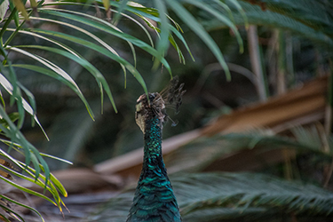

Rotem Ezra
My name is Rotem Ezra, I am 24 years old. I am a software engineering student at Shenkar College. My hobby is photography. In the pictures below you can see some of my photos.
Learn More- 
My Skills
Critical Thinking
Strives to analyze my arguments carefully, seek valid evidence and reach well-founded conclusionst
Creativity
Ability to think creatively and think outside the box
Photographer
Photography is an art

self-learning
High self-learning ability.